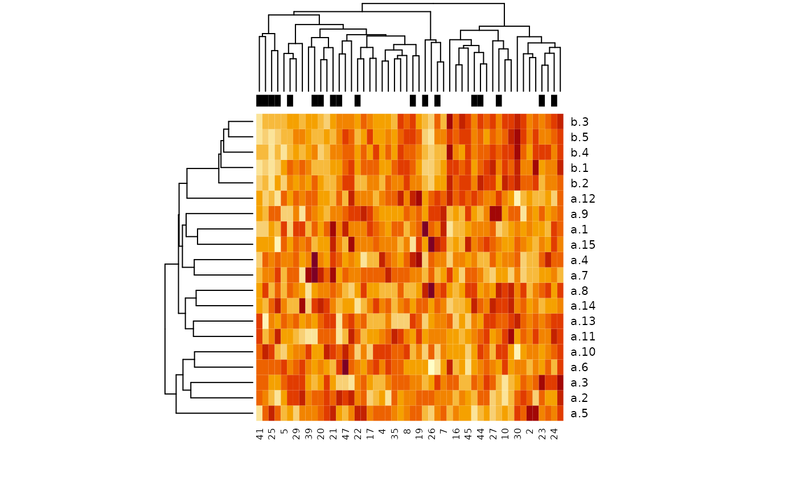

create.data.RdThis function creates multiple groups of predictor variables which may be correlated within each group, and binary or survival time (without censoring) response according to specified weights of the predictors.
integer vector giving the number of variables of each variable type. The number of variable types is equal to the length of this vector.
integer vector of the same length as nvars, giving the population pairwise Pearson correlation within each group.
integer vector of the same length as nvars, giving the associations of each type with outcome
logical vector of the same length as nvars, specifying whether only the first variable of each type is associated with outcome (TRUE) or all variables of that type (FALSE)
an integer giving the number of observations
"none" for no censoring, or a vector of length two c(a,b) for uniform U(a,b) censoring.
This provides an option to add uncertainty to binary outcomes by randomly switching labels with probability labelswapprob. The probability of a label being swapped is independent for each observation. The value is ignored if response is "timetoevent"
either "timetoevent" or "binary"
baseline hazard, used for "timetoevent"
intercept which is added to X%*%Beta for "binary"
This function simulates "predictor" variables in one or more groups, which are standard normally distributed. The user can specify the population correlation within each variable group, the association of each variable group to outcome, and whether the first or all variables of that type should be associated with outcome. The simulated response variable can be time to event with an exponential distribution, or binary survival with a logistic distribution.
Returns a list with items:
a summary of the variable types produced
weights of each variable in computing the outcome
covariance matrix used for generating potentially correlated random predictors
dataframe containing the predictors and response. Response is the last column for binary outcome ("outcome"), and the last two columns for timetoevent outcome ("time" and "cens")
Waldron L., Pintilie M., Tsao M.-S., Shepherd F. A., Huttenhower C.*, and Jurisica I.* Optimized application of penalized regression methods to diverse genomic data. (2010). Under review. (*equal contribution)
Depends on the MASS package for correlated random number generation
##binary outcome example
set.seed(9)
x <-
create.data(
nvars = c(15, 5),
cors = c(0, 0.8),
associations = c(0, 2),
firstonly = c(TRUE, TRUE),
nsamples = 50,
response = "binary",
logisticintercept = 0.5
)
summary(x)
#> Length Class Mode
#> summary 6 data.frame list
#> associations 20 -none- numeric
#> covariance 400 -none- numeric
#> data 21 data.frame list
x$summary
#> start end cors associations num firstonly
#> a 1 15 0.0 0 15 TRUE
#> b 16 20 0.8 2 5 TRUE
model <- glm(outcome ~ ., data = x$data, family = binomial)
#> Warning: glm.fit: algorithm did not converge
#> Warning: glm.fit: fitted probabilities numerically 0 or 1 occurred
summary(model)
#>
#> Call:
#> glm(formula = outcome ~ ., family = binomial, data = x$data)
#>
#> Deviance Residuals:
#> Min 1Q Median 3Q Max
#> -8.155e-05 -2.100e-08 2.100e-08 2.100e-08 7.017e-05
#>
#> Coefficients:
#> Estimate Std. Error z value Pr(>|z|)
#> (Intercept) 146.045 28566.445 0.005 0.996
#> a.1 205.225 36863.342 0.006 0.996
#> a.2 -350.824 60613.163 -0.006 0.995
#> a.3 26.278 9549.552 0.003 0.998
#> a.4 -221.866 39113.234 -0.006 0.995
#> a.5 95.717 24911.161 0.004 0.997
#> a.6 36.924 12817.964 0.003 0.998
#> a.7 -246.090 44715.891 -0.006 0.996
#> a.8 65.058 13128.095 0.005 0.996
#> a.9 -316.993 58214.882 -0.005 0.996
#> a.10 4.299 20688.797 0.000 1.000
#> a.11 -218.757 39199.270 -0.006 0.996
#> a.12 63.066 20305.078 0.003 0.998
#> a.13 54.937 11733.007 0.005 0.996
#> a.14 -112.590 30198.194 -0.004 0.997
#> a.15 398.687 74940.068 0.005 0.996
#> b.1 498.778 88875.945 0.006 0.996
#> b.2 -297.858 56626.061 -0.005 0.996
#> b.3 -677.344 116466.624 -0.006 0.995
#> b.4 188.575 39169.971 0.005 0.996
#> b.5 699.090 123792.675 0.006 0.995
#>
#> (Dispersion parameter for binomial family taken to be 1)
#>
#> Null deviance: 6.5342e+01 on 49 degrees of freedom
#> Residual deviance: 6.6338e-08 on 29 degrees of freedom
#> AIC: 42
#>
#> Number of Fisher Scoring iterations: 25
#>
dat <- t(as.matrix(x$data[, -match("outcome", colnames(x$data))]))
heatmap(dat, ColSideColors = ifelse(x$data$outcome == 0, "black", "white"))

##censored survival outcome example:
set.seed(1)
x <- create.data(
nvars = c(15, 5),
cors = c(0, 0.8),
associations = c(0, 2),
firstonly = c(TRUE, TRUE),
nsamples = 50,
censoring = c(2, 10),
response = "timetoevent"
)
sum(x$data$cens == 0) / nrow(x$data) #34 percent censoring
#> [1] 0.36
library(survival)
surv.obj <- Surv(x$data$time, x$data$cens)
plot(survfit(surv.obj ~ 1), ylab = "Survival probability", xlab = "time")